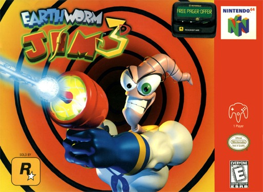
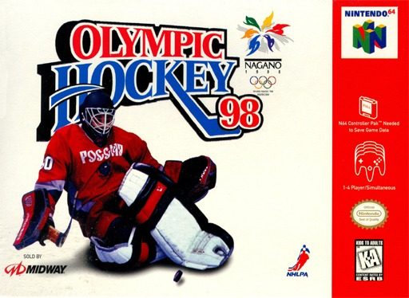
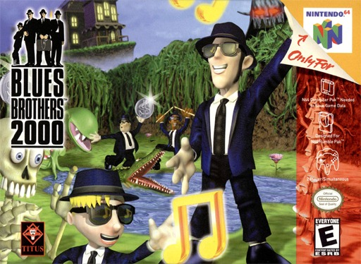
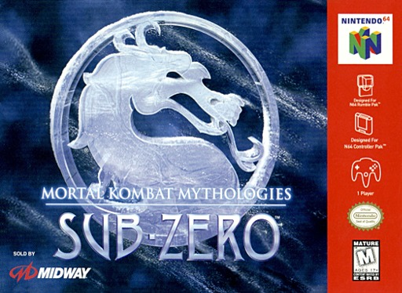
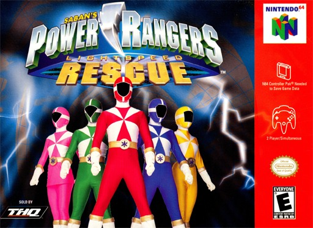
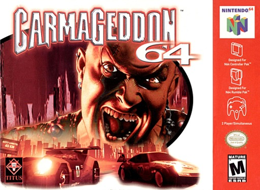
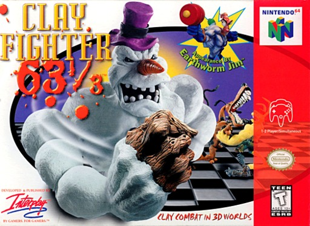
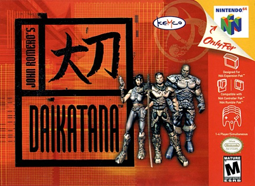
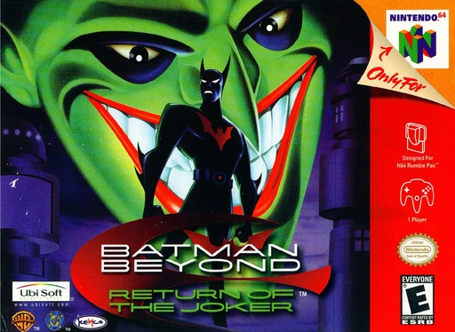
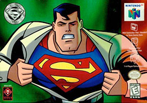

Contamos en cuantas listas de peores aparece cada juego (Den of Geek, WatchMojo, EGM, The Guardian, GameTrailers y mas), sumamos la leyenda de cada cartucho y dejamos afuera lo que ya esta en nuestro Top Mundial. Solo juegos con licencia Nintendo y venta normal.
03
#10
EN 1 LISTA

N64
TARROVISIONCH 10
NO SIGNAL
Inserta gameplay aqui
EARTHWORM JIM 3D
N64 · 1999 · ROCKSTAR (DEV. VIS INTERACTIVE) · WATCHMOJO
▶ PREMIO AL QUE PERDIO LAS CANICAS (DE VERDAD)Una vaca voladora deja a Jim en coma y hay que recuperar su cordura juntando canicas verdes y Ubres Doradas de la Lucidez. Si, existen. GameSpot dijo que la camara estaba en una mision kamikaze para destruir el juego.
04
#9
EN 2 LISTAS

N64
TARROVISIONCH 09
NO SIGNAL
Inserta gameplay aqui
OLYMPIC HOCKEY '98
N64 · 1998 · MIDWAY (DEV. TREYARCH) · DEN OF GEEK (#10) + WATCHMOJO
▶ PREMIO AL RECICLAJE OLIMPICOEs el juego de hockey de Wayne Gretzky con otra caja: casi todo es identico, salvo los logos, los colores y una cancha mas grande. IGN le puso 0 de 10, con un comentario: publicaremos una nueva resena cuando Midway lance un juego nuevo.
05
#8
EN 2 LISTAS

N64
TARROVISIONCH 08
NO SIGNAL
Inserta gameplay aqui
BLUES BROTHERS 2000
N64 · 2000 · TITUS (DEV. PLAYER 1) · DEN OF GEEK (#8) + WATCHMOJO
▶ PREMIO AL ARBOL MALVADOElwood sale de la carcel de Joliet para juntar a la banda en dos dias, y en el camino se enfrenta al alcaide, a Willie y a un arbol malvado. Den of Geek lo llama una secuela innecesaria. Pero una revista oficial de Nintendo le puso 85.
06
#7
EN 2 LISTAS

N64
TARROVISIONCH 07
NO SIGNAL
Inserta gameplay aqui
MORTAL KOMBAT MYTHOLOGIES: SUB-ZERO
N64 · 1997 · MIDWAY · DEN OF GEEK (#2) + WATCHMOJO
▶ PREMIO AL NINJA QUE NO PUEDE DAR LA VUELTAUn juego mitad pelea, mitad plataformas donde el Nintendo 64 perdio los videos, lo mejor de la version de PlayStation. Para darse la vuelta hay que apretar un boton de accion. IGN le puso 3 de 10 y N64 Magazine, 9%.
07
#6
EN 2 LISTAS

N64
TARROVISIONCH 06
NO SIGNAL
Inserta gameplay aqui
POWER RANGERS: LIGHTSPEED RESCUE
N64 · 2000 · THQ (DEV. MASS MEDIA) · DEN OF GEEK (#3) + WATCHMOJO
▶ PREMIO A LOS GRAFICOS HECHOS EN UNA SEMANALos Rangers, los vehiculos y los Megazords, con voces del elenco de la serie. Den of Geek dice que los graficos parecen hechos en una semana. Metacritic le puso 25 sobre 100 y N64 Magazine, 9%.
08
#5
EN 2 LISTAS

N64
TARROVISIONCH 05
NO SIGNAL
Inserta gameplay aqui
CARMAGEDDON 64
N64 · 1999 · TITUS (SEGUN DEN OF GEEK) · DEN OF GEEK (#4) + WATCHMOJO (#2)
▶ PREMIO AL ATROPELLO DE ZOMBIS SIN GRACIAEl juego de atropellar peatones llego al Nintendo 64 con zombis en lugar de peatones y, segun Den of Geek, sin animaciones de destruccion que satisfagan. N64 Magazine le puso 8%, su nota mas baja entre 1999 y 2004.
09
#4
EN 2 LISTAS

N64
TARROVISIONCH 04
NO SIGNAL
Inserta gameplay aqui
CLAYFIGHTER 63 1/3
N64 · 1997 · INTERPLAY · DEN OF GEEK (#6) + WATCHMOJO
▶ PREMIO A LA EDICION MAS COTIZADA DEL PEOR LUCHADORUn juego de pelea con personajes de plastilina que se burla de Street Fighter, Mortal Kombat y Killer Instinct. IGN dijo que era tan malo que fija el estandar de lo malo. Su edicion para alquiler, Sculptor's Cut, de solo 20.000 copias, es hoy de las mas raras del N64.
10
#3
EN 2 LISTAS

N64
TARROVISIONCH 03
NO SIGNAL
Inserta gameplay aqui
JOHN ROMERO'S DAIKATANA
N64 · 2000 · KEMCO (DEV. ION STORM) · DEN OF GEEK (#7) + WATCHMOJO
▶ PREMIO A LA ESPADA SIN FILOUn shooter que llego al N64 primero como exclusivo de alquiler de Blockbuster, con 18 niveles en vez de 24. Nintendo Power dijo que el Doom del Super Nintendo era superior. La version de Game Boy Color era mejor, y no salio en Norteamerica.
11
#2
EN 3 LISTAS

N64
TARROVISIONCH 02
NO SIGNAL
Inserta gameplay aqui
BATMAN BEYOND: RETURN OF THE JOKER
N64 · 2000 · UBISOFT (DEV. KEMCO) · DEN OF GEEK (#5) + WATCHMOJO + EGM
▶ PREMIO AL TRAJE QUE GANA SOLOCuatro trajes y uno, el defensivo, tan poderoso que termina el juego en unos 30 minutos, segun Den of Geek. EGM le puso 1,5 de 10 y lo incluyo entre los 10 juegos peor evaluados de su historia.
12
#1
EN 5 LISTAS

N64
TARROVISIONCH 01
NO SIGNAL
Inserta gameplay aqui
SUPERMAN 64
N64 · 1999 · TITUS · DEN OF GEEK (#1) + WATCHMOJO (#1) + EGM + THE GUARDIAN + GAMETRAILERS
▶ PREMIO AL SUPERHEROE QUE SE PIERDE EN LA NIEBLAVolar por anillos en una niebla espesa. Su director tecnico lo llamo un desastre de principio a fin, y del diseno original sobrevivio solo un 10%. Tiene el record Guinness al superheroe peor evaluado, con 22,9%. Y aun asi vendio mas de 500.000 copias.
13
ANALISIS DEL TOP
EL FINAL DEL NINTENDO 64 Y EL SELLO TITUS
Siete de los diez salieron en 1999 o 2000, al final de la vida del N64, y cuatro son licencias de peliculas, series o comics (Superman, Batman Beyond, Power Rangers y Blues Brothers). Titus aparece tres veces, Midway dos y Kemco dos seguidas.
14
GAME OVER
INSERTA MONEDA PARA CONTINUAR
Coco cierra tocando el tema de Game Over en bateria. ¿Cual fue el peor cartucho de N64 que les toco jugar? Cuentanos en los comentarios y cual consola quieren que siga.